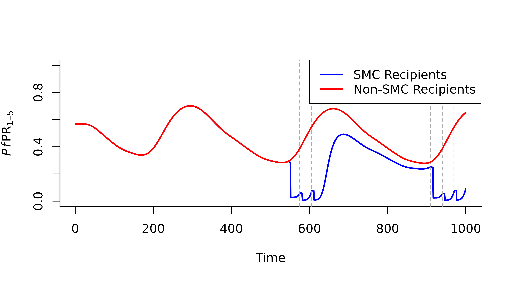

In malariasimple we can customise simulation outputs in
two ways:
1. Specifying age-specific rendering
This method is similar to the method used in
malariasimulation. Customisation occurs in the parameter
set-up stage and the desired output is created directly with
run_simulation(). However, this method is limited to
specifying age categories for prevalence and critical incidence
estimates. An example of this method to compare critical incidence in
different age groups is shown in the vignette
Basic_Model_Run
2. Using get_custom_output()
One of the benefits of malariasimple is that comparisons
between groups of individuals can be made very easily using
get_custom_output(). This method requires an extra step of
post-processing after running the simulation, however it permits much
more flexibility regarding customising the output. Any human variable
can be output, this includes:
- Total humans
"n" - Clinical incidence
"clin_inc" - Detected cases
"detect" - Susceptibles
"S" - Diseased, untreaded
"D" - Asymptomatic infection
"I" - Sub-patent infection
"U" - Treated Disease
"T" - Uninfected, prophylactically protected
"P"
We can then define the subsection of the human population we want these outputs for. These can be defined according to three axes:
- Age
- Intervention category
- Biting group
Using this method is a two step process:
- Run simulation, specifying
full_output = TRUE. - Use
get_custom_output()to summarise the desired output variables.
Below is an example comparing malaria prevalence in children who received SMC and those who did not.
library(malariasimple)
## Set up parameters and run simulation
#Define seasonality parameters
g0 <- 41.27
g <- c(-57.96, 14.57, 7.23)
h <- c(-35.22, 35.87, -14.93)
#Define SMC parameters
smc_days <- c(545, 575, 605, 910, 940, 970)
smc_cov <- 0.6
#Define a custom age vector
age_vector <- c(0, 0.5, 1, 2, 3, 5, 7, 10, 20, 30, 40, 50, 60, 70) * 365
#Define malariasimple parameters
smc_params <- malariasimple::get_parameters(n_days = 1000,
age_vector = age_vector) |>
malariasimple::set_seasonality(g0,g,h) |>
malariasimple::set_smc(coverages = 0.6,
days = smc_days,
min_age = 1 * 365,
max_age = 5*365,
distribution_type = "correlated") |>
malariasimple::set_equilibrium(init_EIR = 30)
#Run simulation with 'full_output = TRUE'
smc_sim <- malariasimple::run_simulation(smc_params, full_output = TRUE) |> as.data.frame()
## Get customised outputs
#Define ages of interest (in this case, all age categories within the SMC age boundaries)
#Age categories are selected by their lower bound. Given the age_vector above
#(...1, 2, 3, 5...), selecting lower bounds 1, 2 and 3 covers the bands [1,2),
#[2,3) and [3,5) - i.e. ages 1 to 5 - which matches the SMC age range
#(min_age = 1 year, max_age = 5 years) and the reported PfPR1-5.
smc_ages <- c(1, 2, 3) * 365
#Get output for children who have received SMC
smc_kids <- get_custom_output(
smc_params,
smc_sim,
output_variables = c("n", "detect"),
ages = smc_ages,
int_group = 3
)
#Get output for children who did not receive SMC
non_smc_kids <- get_custom_output(
smc_params,
smc_sim,
output_variables = c("n", "detect"),
ages = smc_ages,
int_group = 1
)
## Plot the results
plot(
smc_kids$time, smc_kids$detect / smc_kids$n,
type = "l", col = "blue", lwd = 2,
xlab = "Time", ylab = expression(italic(Pf)*PR[1-5]),
ylim = c(0,1),
bty = "l"
)
abline(v = smc_days, col = "darkgrey", lty = 2)
lines(
non_smc_kids$time, non_smc_kids$detect / non_smc_kids$n,
col = "red", lwd = 2
)
legend(
"topright",
legend = c("SMC Recipients", "Non-SMC Recipients"),
col = c("blue", "red"), lty = 1, lwd = 2,
bty = "c", bg = "white"
)